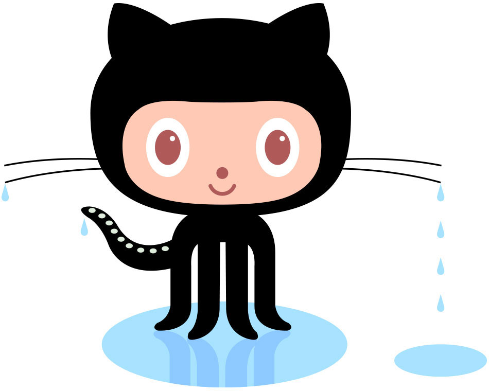

All About GitHub
- Q. What is a version control system?
- A. The practice of tracking and managing changes to software code.
- Q. What is a Git
- A. Global Information Tracker.
- Q. What is GitHub
- A. GitHub is a for-profit company offering a cloud-based Git repository.
- Q. What is the difference between Git and GitHub?
- A. Git is a version control system that lets you manage and keep track of your source code history. GitHub is a cloud-based hosting service that lets you manage Git repositories.
- Q. Who started GitHub and how was it started?
- A. Chris Wanstrath, P. J. Hyett, Tom Preston-Werner, and Scott Chacon using Ruby on Rails.
- Q. What company owns it now?
- A. Microsoft
- Q. How much does a GitHub account cost?
- A. Free, but there is are paid options.
- Q. What is the Octocat?
- A. The mascot of GitHub.

- Git/Github terms:
- Repository: A repository is the most basic element of GitHub. They're easiest to imagine as a project's folder. A repository contains all of the project files (including documentation), and stores each file's revision history. Repositories can have multiple collaborators and can be either public or private.
- Commit: A commit, or "revision", is an individual change to a file (or set of files). When you make a commit to save your work, Git creates a unique ID (a.k.a. the "SHA" or "hash") that allows you to keep record of the specific changes committed along with who made them and when. Commits usually contain a commit message which is a brief description of what changes were made.
- Fork: A fork is a personal copy of another user's repository that lives on your account. Forks allow you to freely make changes to a project without affecting the original upstream repository. You can also open a pull request in the upstream repository and keep your fork synced with the latest changes since both repositories are still connected.
- Push: To push means to send your committed changes to a remote repository on GitHub.com. For instance, if you change something locally, you can push those changes so that others may access them.
- Pull request: Pull requests are proposed changes to a repository submitted by a user and accepted or rejected by a repository's collaborators. Like issues, pull requests each have their own discussion forum
- Workflows: a configurable automated process that will run one or more jobs.
- Issues: Issues are suggested improvements, tasks or questions related to the repository. Issues can be created by anyone (for public repositories), and are moderated by repository collaborators. Each issue contains its own discussion thread. You can also categorize an issue with labels and assign it to someone.
- Raw button: Opens the file in a raw form, meaning that any HTML formatting disappears.
- Blame button: Line-by-line revision history for an entire file, or view the revision history of a single line within a file.